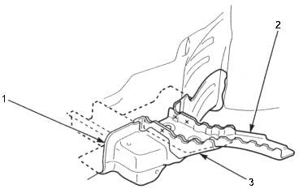
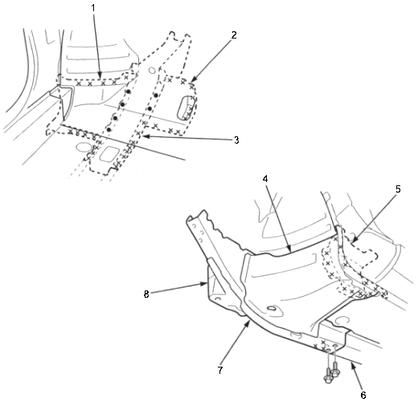

Front Side Frame/Outrigger
Removal (cont'd)
|
3-13 |
|
- Check the side frame bulkhead rear for position and damage. If necessary replace it.
 |
- SUB-FRAME REAR BRACKET
- SIDE FRAME BULKHEAD REAR
- SIDE FRAME EXTENSION REAR
|
- If necessary, replace the side frame extension rear, outrigger and sub-frame rear bracket as an assembly.
NOTE: When removing the outrigger, leave the inside sill extension attached to the inside sill, if possible.
Passenger compartment side:
 |
- OUTRIGGER
- SUB-FRAME REAR BRACKET
- SIDE FRAME EXTENSION REAR
- OUTRIGGER
- INSIDE SILL EXTENSION
- FLOOR FRAME
- SIDE FRAME EXTENSION REAR
- SUB-FRAME REAR BRACKET
|